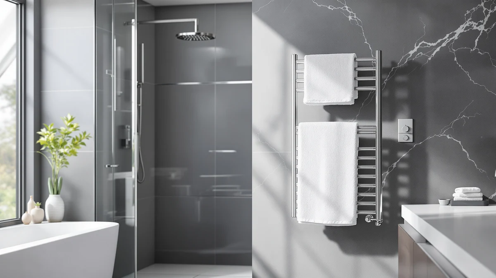

Best Portable Towel Warmers of 2026: No Installation Required
Prices and picks verified as of August 2026. Independent, reader-supported reviews.


Quick Answer
The best portable towel warmers are bucket-style units that plug into any standard outlet and warm a towel in 10 to 15 minutes, no wall mounting or electrician required. The SereneLife Towel Warmer Bucket Style is our top pick: it fits two large towels, runs on a simple one-touch timer, and stays under $80.
Our pick: SereneLife Towel Warmer Bucket Style, $78.99 Check Price on Amazon
Bottom line: our top pick is the SereneLife Towel Warmer Bucket Style at $78.99. The best budget option is the PureClean Towel Warmer Bucket at $50.07.
Things to Know Before You Buy
- Portable means bucket-style, not wall-mounted. Every warmer in this guide is a standalone unit you plug in and unplug, so you can move it between bathrooms or take it with you, unlike a hardwired rack that stays fixed to one wall.
- Capacity ranges from 5 liters to 23 liters. Salon-style cabinet warmers like the VEVOR models hold 8 to 12 folded hand towels, while bucket warmers like the SereneLife and COSTWAY units are sized for one or two full bath towels rolled up.
- Auto shut-off is standard, but timer length varies. Most bucket warmers cap out at 60 minutes, while the COSTWAY unit shuts off after 1 hour and the VEVOR cabinets rely on a manual switch with over-temperature protection instead of a countdown timer.
- Price tracks capacity more than brand. The 23-liter SereneLife bucket runs cheaper than the 12-liter SereneLife counter model, so a bigger number on the box does not automatically mean a higher price tag.
- None of these need an outlet near the shower. Because they are portable, you can plug one in near a bedroom closet or vanity and carry the warm towel to where you actually need it.
The best portable towel warmers solve a specific problem: you want a warm towel out of the shower, but you rent your apartment, your bathroom wiring cannot support a hardwired rack, or you do not want to hire an electrician for a towel heater. A bucket-style warmer plugs into any standard outlet, warms up in 10 to 15 minutes, and unplugs when you move.
We looked at eight portable models spanning $54 to $95, from simple one-button SereneLife buckets to VEVOR's salon-style cabinets built for towel volume rather than bath towels alone. The SereneLife Towel Warmer Bucket Style comes out on top for most households: it fits two large towels, keeps controls to a single button, and costs less than most of the field.
If you need more capacity for a full family bathroom, the SereneLife Towel Warmer - 23L holds more towels for less money than several smaller units here. If you run a home spa or salon setup, the VEVOR Hot Towel Warmer 8L is built for that volume instead of a single household's morning routine.
Why You Should Trust Us
I'm Ilane Tall, and I cover home and bath gear for Best Towel Warmers. We do not run a fake testing lab here. Instead of claiming firsthand time with every model, we compare the manufacturer specifications, listed pricing, and verified buyer reviews for each product against its direct competitors in the same price bracket. For portable towel warmers specifically, that means weighing capacity, heat-up claims, and safety features like auto shut-off against the price you actually pay.
Portable warmers get marketed with similar language across brands, so a side-by-side comparison of what each one actually holds and how it actually heats matters more than any single product page.
How We Picked
To build this list of the best portable towel warmers, we pulled every plug-in, non-hardwired towel warmer available in this price range and grouped them by format: bucket-style warmers meant for one or two bath towels, and cabinet-style warmers built for higher towel volume in a spa or salon setting. We excluded any wall-mounted or hardwired rack, since those require installation and fall outside what most people mean by "portable."
Within each group we compared stated capacity in liters, listed dimensions, safety features like auto shut-off, and price. We prioritized models with a clearly stated capacity and dimensions over listings that only offered vague marketing language, since an unstated capacity makes it impossible to know if a towel will actually fit.
How We Compared
We don't own a bathroom test lab, and none of these products were physically installed for this guide. Instead we compared each listing's stated capacity, dimensions, heating timer options, and price against its closest competitors, and we cross-referenced verified owner reviews where the marketplace listing provided one, looking specifically at complaints about heat-up time and auto shut-off reliability rather than star ratings alone.
Where two products were nearly identical on paper, like the SereneLife bucket and counter models, we based the ranking on the feature that most affected day-to-day use, in this case bucket capacity and price, rather than a marginal spec difference. For the VEVOR cabinets, we compared their stated liter capacity and towel count directly against the bucket-style competitors so shoppers choosing between formats can weigh the best portable towel warmers fairly.
Our Picks
Here are the eight best portable towel warmers from our comparison, ranked by how well each balances capacity, controls, and price.

SereneLife Towel Warmer Bucket Style
What we like
- Fits two large bath towels or a throw blanket and bathrobe at once
- One-touch operation with no display to configure
- Timer offers four preset lengths from 15 to 60 minutes
- Fragrance disc holder for a spa-like touch
Flaws but not dealbreakers
- No LED display, so you can't see the exact time remaining
- Only ships in black, with no color options for other units on this list
| Material | Stainless steel |
| Size | Large |
The SereneLife Towel Warmer Bucket Style is a 12 x 12 x 21.5-inch bucket that plugs into a standard outlet and heats up on a single button. The built-in timer runs for 15, 30, 45, or 60 minutes, which covers everything from a quick warm-up before a shower to a full soak. At 12 inches across, it's roomy enough for two large bath towels or a personal throw blanket and bathrobe, which puts it ahead of several smaller counter-style warmers in this guide on pure capacity.
What separates this from the higher-priced PureClean bucket is the interface. There's no LED screen and no multi-step menu, only one button that cycles through the timer options. For a bathroom appliance that most people use for a few minutes each morning, that simplicity is worth more than a display most owners would rarely check. Add in the fragrance disc holder for a subtle scent, and at $78.99 it undercuts most of the field while matching or beating their capacity.

PureClean Towel Warmer Bucket Portable
What we like
- LED display shows the selected heating duration
- Fits two large towels, blankets, or a bathrobe
- Fragrance disc holder for scented warming
- Four timer presets from 15 to 60 minutes
Flaws but not dealbreakers
- The most expensive portable warmer in this guide at $95.10
- Same capacity and timer range as the SereneLife bucket that costs about $16 less
| Material | Stainless steel |
| Size | — |
The PureClean Towel Warmer Bucket Portable matches the SereneLife bucket on capacity, fitting two large towels or a blanket and bathrobe combination, but adds an LED display so you can see how much time is left on the timer rather than guessing. The timer itself offers the same 15, 30, 45, and 60-minute presets, and a fragrance disc holder sits inside for anyone who wants a scented warm-up.
At $95.10, it's priced about $16 above the nearly identical SereneLife bucket, and that gap buys the LED screen and gray finish rather than any extra capacity. If a visible countdown matters to you, or you prefer the gray color over black, that premium is easy to justify. If not, the SereneLife bucket delivers the same core function for less.

Serenelife Counter Towel Warmer Luxury
What we like
- Priced under $55, among the cheapest in this guide
- 12-liter capacity fits one large towel, robe, or blanket
- Touch buttons with LED indicator lights for feedback
- Auto shut-off for unattended safety
Flaws but not dealbreakers
- Holds one large towel rather than the two most bucket models fit
- Smaller footprint means less room for a bathrobe alongside a towel
| Material | Stainless steel |
| Size | 12.3’’ x 12.3’’ x 14’’ -inches |
The Serenelife Counter Towel Warmer Luxury trades capacity for a smaller footprint and a lower price. At 12.3 x 12.3 x 14 inches with a 12-liter interior, it's built for one large towel, bathrobe, or blanket rather than the two-towel capacity of the bigger buckets in this guide. The same 15/30/45/60-minute timer options carry over, along with touch buttons and LED indicator lights that confirm the unit is running.
At $54.99, it's one of the cheapest portable warmers here, and the auto shut-off function means you don't have to remember to switch it off after a busy morning. If you live alone or have a compact bathroom where a large bucket doesn't fit on the counter, this smaller footprint is a real advantage rather than a compromise.

SereneLife Bucket Towel Warmers White
What we like
- 13.25 x 13.25 x 18.5-inch bucket fits two full-sized towels plus a throw or robe
- White finish stands out from the mostly black and gray field here
- Single-touch operation with a 60-minute auto shut-off
- Even heating from end to end, according to the listed design
Flaws but not dealbreakers
- No adjustable timer presets, only a fixed 60-minute auto shut-off
- Priced close to the SereneLife bucket, which offers the same brand and similar capacity for about a dollar less
| Material | Stainless steel |
| Size | 13.25" x 13.25" x 18.5" |
The SereneLife Bucket Towel Warmers White is the tallest bucket in this guide at 18.5 inches, with a 13.25-inch base that fits two full-sized towels along with a throw blanket, robe, or pajamas. It runs on the same single-touch control as SereneLife's other buckets, but instead of selectable timer lengths, it automatically shuts off after 60 minutes, which simplifies the interface at the cost of shorter-cycle flexibility.
The white and natural wood-toned finish is the standout feature here, since most of the field comes in black or gray. At $77.98, it lands within a dollar of the brand's black bucket model, so the choice largely comes down to which finish fits your bathroom and whether you want the flexibility of shorter timer presets.

COSTWAY Towel Warmer for Bathroom
What we like
- 21-liter capacity fits two oversized 45 x 70-inch towels
- Child safety lock, a feature none of the other buckets here list
- Flip-top lid with a built-in handle for one-hand access
- Fragrance holder built into the lid
Flaws but not dealbreakers
- Second most expensive bucket in this guide at $89.99
- No stated timer presets beyond the 1-hour auto shut-off
| Material | Stainless steel |
| Size | 13" x 18.5" |
The COSTWAY Towel Warmer for Bathroom holds 21 liters, enough for two oversized 45 x 70-inch towels rather than the standard bath towels most buckets here are sized for. A galvanized sheet interior and a claimed 266°F heat-up within 15 minutes back that capacity, and the flip-top lid includes a built-in handle so you're not fumbling to open it one-handed.
The feature that sets it apart is the child safety lock, which none of the other bucket warmers in this guide list. At $89.99, it costs more than most of the field, but if you have kids in the house or simply want the largest towels to fit without folding, the extra capacity and lock justify the premium over the standard-sized buckets.

VEVOR Hot Towel Warmer 5L
What we like
- Holds 8 to 12 folded towels, more pieces than any bucket in this guide
- Steam heating reaches temperature in about 5 minutes
- Stainless steel rack for even air circulation
- Over-temperature protection built into the control switch
Flaws but not dealbreakers
- Sized for folded hand towels, not a full bath towel rolled up
- Manual switch or knob control rather than a digital timer
| Material | Stainless steel |
| Size | 5L |
The VEVOR Hot Towel Warmer 5L is built differently from the rest of this list. Instead of a bucket for one or two bath towels, it's a cabinet with a stainless steel rack that holds 8 to 12 folded towels, the kind of volume a barber, esthetician, or home spa setup goes through in a session rather than a single morning shower. Steam heating brings it up to temperature in about 5 minutes, with 360-degree thermal radiation meant to avoid cold spots across the rack.
At $59.90, it's competitively priced against the bucket warmers here, but the format only makes sense if you're warming multiple smaller towels rather than one large bath towel. If that's your use case, the over-temperature protection and steam heating give it an edge the simple bucket warmers don't offer.

VEVOR Hot Towel Warmer 8L
What we like
- Holds up to 16 standard-sized towels, the highest towel count in this guide
- Includes a stainless steel rack, clip, and instruction manual
- Larger capacity than the 5L VEVOR model for about $9 more
Flaws but not dealbreakers
- Listing provides fewer stated safety details than the 5L VEVOR cabinet
- Still a cabinet format, not a fit for a single large bath towel
| Material | Stainless steel |
| Size | 8L |
The VEVOR Hot Towel Warmer 8L steps up from the brand's 5L cabinet with room for up to 16 standard-sized towels instead of 12, using the same stainless steel rack and clip setup. The listing includes an instruction manual, which matters more here than with the simpler bucket warmers since a cabinet with a rack has a bit more of a learning curve to load correctly.
At $68.90, it costs about $9 more than the 5L model for meaningfully more capacity, which makes it the better buy if you're regularly warming towels for more than one or two people. For a single household's morning routine, the smaller 5L cabinet or any of the bucket warmers will cover the job for less.

SereneLife Towel Warmer - 23L
What we like
- 23-liter capacity, the largest bucket in this guide, for the second-lowest price
- 450W heating with a 20/40/60-minute adjustable timer
- Essential oil disc holder for scented warming
- Safety lock requires pressing a button before the lid lifts
Flaws but not dealbreakers
- Wood finish won't match every bathroom's color scheme
- Timer presets start at 20 minutes rather than 15, so the shortest cycle runs a bit longer
| Material | Stainless steel |
| Size | — |
The SereneLife Towel Warmer - 23L has the largest stated capacity in this guide, big enough for two oversized towels, and it does that at $54.39, among the cheapest prices here. A 450W heating element and a 20/40/60-minute timer handle the warming, and an essential oil disc holder adds the same scented-warming option found on SereneLife's other buckets.
The safety lock stands out: rather than a simple auto shut-off, it requires pressing a dedicated button before the lid will lift, which adds a layer of protection beyond what the COSTWAY or PureClean listings describe. Between the capacity, the price, and the added lock, this is the pick for anyone who wants the biggest bucket without the biggest bill.
Quick Comparison
This table lines up all eight portable towel warmers from this guide by material, price, and best use case.
| Product | Material | Price | Rating | Best for | Get it |
|---|---|---|---|---|---|
| SereneLife Towel Warmer Bucket Style | Stainless steel | $78.99 | 4 | Best overall value | View on Amazon → |
| PureClean Towel Warmer Bucket Portable | Stainless steel | $95.10 | 4 | Visible LED countdown | View on Amazon → |
| Serenelife Counter Towel Warmer Luxury | Stainless steel | $54.99 | 4 | Compact, single-towel use | View on Amazon → |
| SereneLife Bucket Towel Warmers White | Stainless steel | $77.98 | 4 | Lighter bathroom finish | View on Amazon → |
| COSTWAY Towel Warmer for Bathroom | Stainless steel | $89.99 | 4 | Families with kids | View on Amazon → |
| VEVOR Hot Towel Warmer 5L | Stainless steel | $59.90 | 4 | Home spa, multiple towels | View on Amazon → |
| VEVOR Hot Towel Warmer 8L | Stainless steel | $68.90 | 4 | Salon-level towel volume | View on Amazon → |
| SereneLife Towel Warmer - 23L | Stainless steel | $54.39 | 4 | Most capacity for the price | View on Amazon → |
What makes a towel warmer "portable" instead of hardwired electric?
Every towel warmer that plugs in is technically electric, but a portable model is a standalone bucket or cabinet you can pick up and move, with no bracket, wiring, or wall mount involved.
How long does a portable towel warmer take to heat a towel?
Based on the timer options listed across these products, most bucket warmers reach a usable warmth within 15 to 20 minutes, and several offer 15-minute presets specifically for that quick turnaround.
The Competition
These eight cover the realistic range of portable towel warmers, but the search behind this list turned up plenty of other listings we didn't include, and it's worth explaining why.
Listings under $35 that market themselves as full towel warmers mostly turned out to be fragrance accessories or replacement discs meant to pair with a warmer you already own, not standalone heating units. We left those out because they don't do the core job of warming a towel on their own.
Hardwired and wall-mounted racks above $100 fall outside this specific list. If a fixed rack that stays permanently installed is what you're after rather than a plug-in unit you can move between rooms, our electric towel warmers and towel warmer buying guide cover that territory separately.
Weighing capacity, controls, and price across all eight, the best portable towel warmers for most people still come down to SereneLife's lineup, and the SereneLife Towel Warmer Bucket Style earns the top spot for delivering the most usable capacity without the highest price tag.
Frequently Asked Questions
What makes a towel warmer "portable" instead of hardwired electric?
Every towel warmer that plugs in is technically electric, but a portable model is a standalone bucket or cabinet you can pick up and move, with no bracket, wiring, or wall mount involved. Every product in this guide falls into that category, unlike a hardwired rack that stays fixed to one wall once installed.
How long does a portable towel warmer take to heat a towel?
Based on the timer options listed across these products, most bucket warmers reach a usable warmth within 15 to 20 minutes, and several offer 15-minute presets specifically for that quick turnaround. The VEVOR cabinet models list a faster steam heat-up of around 5 minutes, though they're warming multiple smaller towels rather than one bath towel.
Do portable towel warmers use a lot of electricity?
The SereneLife 23L model lists a 450W draw, which is in line with a small space heater and only runs for the length of your timer cycle, typically 15 to 60 minutes rather than continuously. Because none of these units are designed to stay on all day, the actual electricity cost of a daily warm towel is modest compared to running a hardwired rack around the clock.
Related Guides
If none of the best portable towel warmers above fit your bathroom, these guides cover the fixed and budget alternatives.